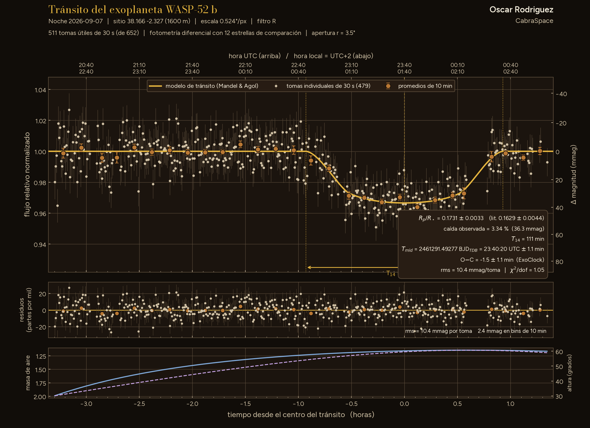
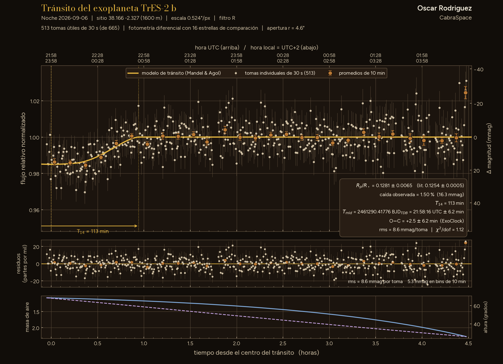
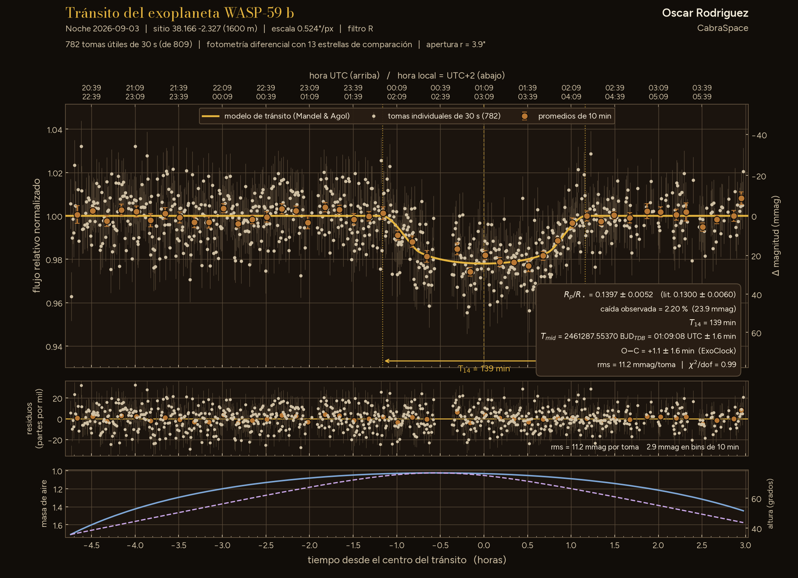

Nº IPhotography and measurements
The observing notebook
What I do from the Nerpio observatory: deep-sky images, exoplanet transit light curves and the 2026 eclipse.
PhotographyMeasurements
SeriesVideo
Solar eclipse, twelfth of August
The eclipse of 12 August 2026 on video, with the Vaonis Vespera Pro.
Watch the series

Pl. XExoplanets · 22 Sep
Transit of Qatar-1 b

Pl. IXExoplanets · 21 Sep
Transit of WASP-52 b

Pl. VIIIExoplanets · 15 Sep
Transit of TrES-3 b

Pl. VIIExoplanets · 13 Sep
Transit of Qatar-3 b partial

Pl. VIExoplanets · 7 Sep
Transit of WASP-52 b partial

Pl. VExoplanets · 6 Sep
Transit of TrES-2 b partial

Pl. IVExoplanets · 3 Sep
Transit of WASP-59 b partial

Pl. IIDeep sky · 24 Apr
PK 164+31.1, planetary nebula

Pl. IDeep sky · 29 Jan
M82, the Cigar Galaxy